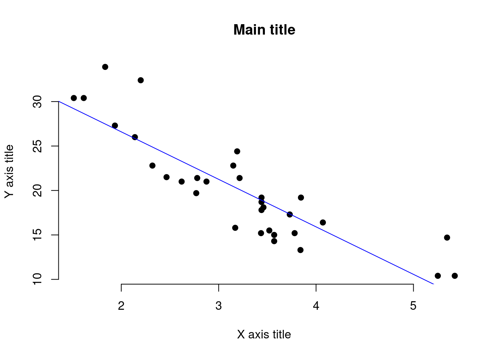
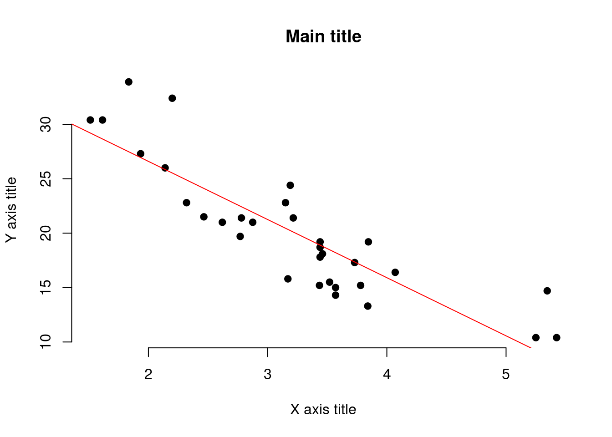
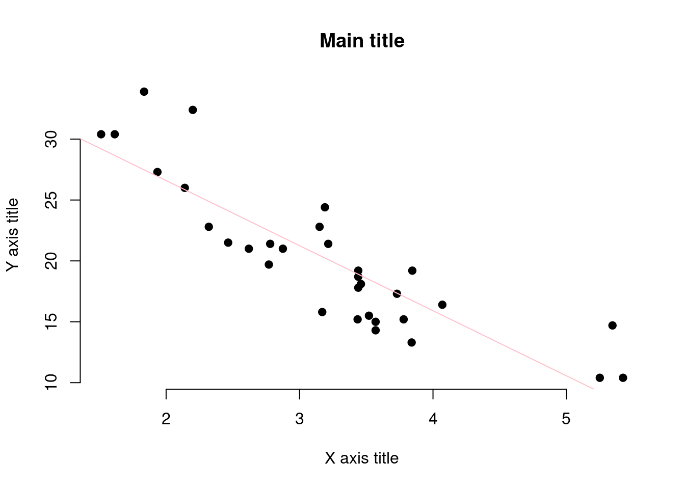
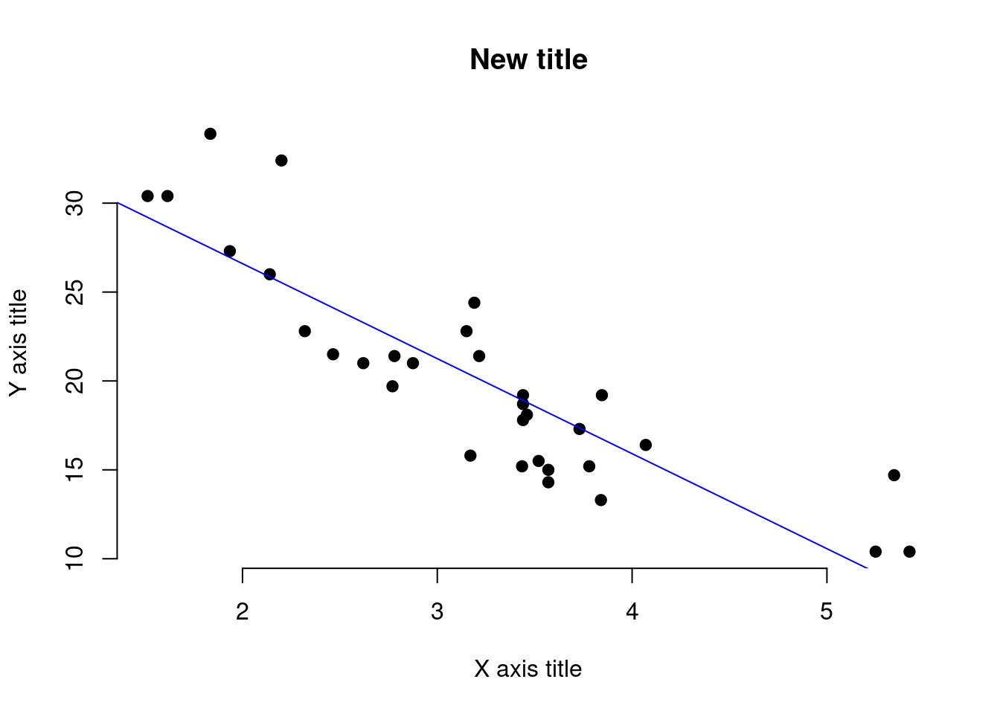
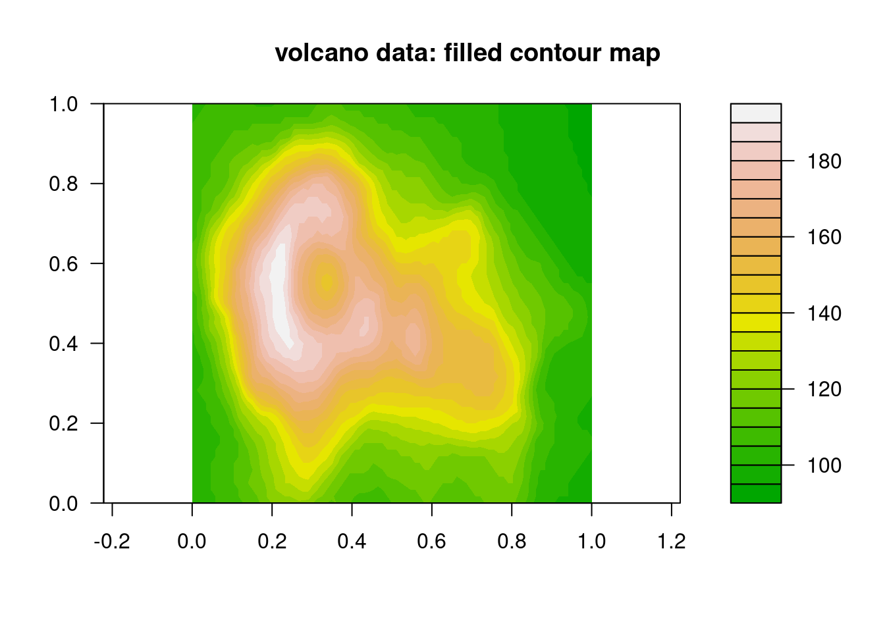
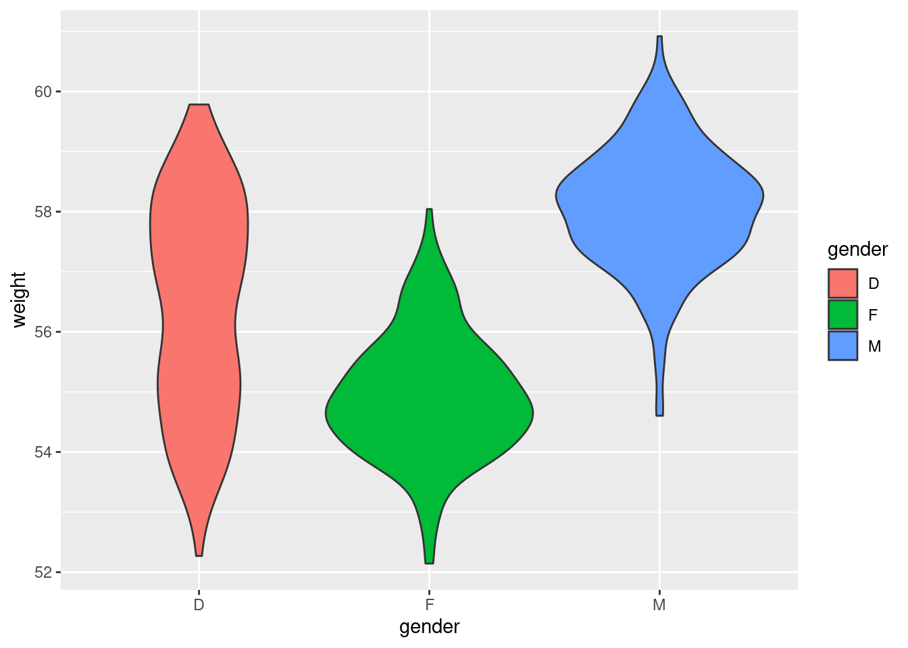
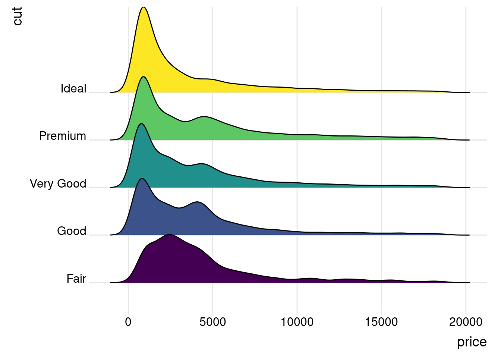
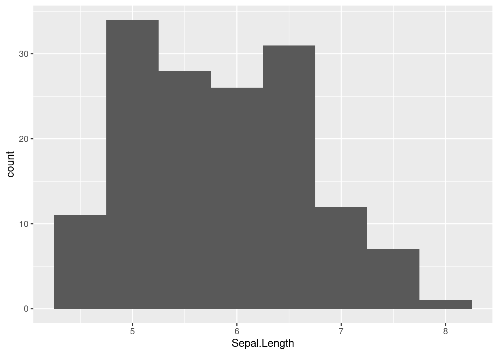

data("mtcars")Module2 : Getting your hands dirty
This document describes Module 2 of the course “Introduction to R”, held in Summer 2023 for the Biodiversity Exploratories.
Learning outcome
- introduction to data visualisation
- data types in R
Tip
In order to learn coding, you need to code
Content
This Module focuses on data visualisation with ggplot, and data import to R.
TODO add table of content
Prerequisites
… TODO
1 Data Visualisation I : overview and play
You have already created some plots in R, using the plot function from base R, and the qplot function from the ggplot2 package.
This chapter will take you through some visualisation techniques R can offer. The code below includes some more advanced R commands. You are absolutely not expected to understand each line of code. The goal of this chapter is (1) to practice running code that looks complicated, and (2) to experience some workflow in R, and to (3) hopefully motivate you to keep on track.
Please just copy and paste the code to your script or console, and experience what happens.
R base plotting
Without loading any visualisation package, R alone can create nice graphs. This chapter will show you how to create a scatterplot. The examples are taken from sthda
R has some in-built datasets. Load the dataset mtcars :
In order to get familiar with the dataset and what it is about, read (quickly) the information provided in the help function :
help(mtcars)Print out the first 10 columns of the dataset, by using :
head(mtcars) mpg cyl disp hp drat wt qsec vs am gear carb
Mazda RX4 21.0 6 160 110 3.90 2.620 16.46 0 1 4 4
Mazda RX4 Wag 21.0 6 160 110 3.90 2.875 17.02 0 1 4 4
Datsun 710 22.8 4 108 93 3.85 2.320 18.61 1 1 4 1
Hornet 4 Drive 21.4 6 258 110 3.08 3.215 19.44 1 0 3 1
Hornet Sportabout 18.7 8 360 175 3.15 3.440 17.02 0 0 3 2
Valiant 18.1 6 225 105 2.76 3.460 20.22 1 0 3 1Create a scatter plot by running all the lines from the following code block:
x <- mtcars$wt
y <- mtcars$mpg
# Plot with main and axis titles
# Change point shape (pch = 19) and remove frame.
plot(x, y, main = "Main title",
xlab = "X axis title", ylab = "Y axis title",
pch = 19, frame = FALSE)
# Add regression line
abline(lm(y ~ x, data = mtcars), col = "blue")
Can you see a scatterplot appearing in RStudio?
You can modify parts of the plot, by modifying parts of the code above. See what happens if we change the last line : We exchange the word “blue” with the word “red”.
x <- mtcars$wt
y <- mtcars$mpg
# Plot with main and axis titles
# Change point shape (pch = 19) and remove frame.
plot(x, y, main = "Main title",
xlab = "X axis title", ylab = "Y axis title",
pch = 19, frame = FALSE)
# Add regression line
abline(lm(y ~ x, data = mtcars), col = "red")
What happens? The color of the regression line changes from blue to red.
Change the color of the regression line to pink.
To do so, again run all the above lines, modifying only the last row.
x <- mtcars$wt
y <- mtcars$mpg
# Plot with main and axis titles
# Change point shape (pch = 19) and remove frame.
plot(x, y, main = "Main title",
xlab = "X axis title", ylab = "Y axis title",
pch = 19, frame = FALSE)
# Add regression line
abline(lm(y ~ x, data = mtcars), col = "pink")
You see, by modifying just parts of the original code, you can modify parts of the plot. Usually, the parts you can easiest modify are the colors and the titles (plot titles and axes titles).
Try to modify the title of the plot, naming it “New title” (or any other name you feel like). To do so, run all the code lines from the above code block again, adding a modification in only one of the lines.
The current title of the plot is “Main title”. Check the above block of code for the words “Main title”. Closely inspect the fifth line (line 5 of the code block).
x <- mtcars$wt
y <- mtcars$mpg
# Plot with main and axis titles
# Change point shape (pch = 19) and remove frame.
plot(x, y, main = "New title",
xlab = "X axis title", ylab = "Y axis title",
pch = 19, frame = FALSE)
# Add regression line
abline(lm(y ~ x, data = mtcars), col = "blue")
Play around with this plot, changing the title and the color of the regression line, maybe even more parameters.
Above, you learned that the parts you can easiest modify are the colors and the titles (plot titles and axes titles). Did you observe that the titles are all highlighted in the same color?
Additional :
In the sthda tutorial, you find instruction to do a 3D scatterplot. Follow those instructions.
Additional : Contour plots
Run the below code to generate a nice colorful plot of the Manuga Whau volcano in Auckland.
data("volcano")
library(grDevices)
library(graphics)
filled.contour(volcano, color.palette = terrain.colors, asp = 1)
title(main = "volcano data: filled contour map")
You find a description of the dataset here and by running help(volcano).
plotting with ggplot2
ggplot2 is a powerful and often used package for visualisation. Below you find an example of a ggplot.
library(ggplot2)Run the code and inspect the plot you just created.
Step 1 : create a data frame, a table of data which is used for plotting. In R, you can create such tables using the below code :
set.seed(1234)
wdata = data.frame(
gender = factor(rep(c("F", "M", "D"), each=200)),
weight = c(rnorm(200, 55), rnorm(200, 58), c(rnorm(100, 55), rnorm(100, 58))))
head(wdata) gender weight
1 F 53.79293
2 F 55.27743
3 F 56.08444
4 F 52.65430
5 F 55.42912
6 F 55.50606You just created a table (R calls this format a data.frame), which stores information of 200 persons gender and weight.
The below code creates a boxplot
# Basic box plot from data frame
ggplot(data = wdata, aes(x = gender, y = weight, fill = gender)) +
geom_boxplot()
The below code creates a violin plot
ggplot(data = wdata, aes(x = gender, y = weight, fill = gender)) +
geom_violin()Create a plot of the dataset “wdata”, by recycling the code from the boxplot, replacing “geom_boxplot()” with “geom_point()”
# Basic bar plot from data frame
ggplot(data = wdata, aes(x = gender, y = weight, fill = gender)) +
geom_point()
You see, that coding (especially plotting) can consist of copy-pasting code from the internet. A great source of different types of plots, which you can usually easily recreate is the R Graph Gallery. This website works as a gallery. You can surf through and select a plot you would like to create (usually with your own data).
Let’s try it out, and recreate this Basic ridgeline plot. Please click on the link and read the introductory words. Then, copy paste the code from the website, or from below (it’s the same code).
# library
library(ggridges)
library(ggplot2)
# Diamonds dataset is provided by R natively
#head(diamonds)
# basic example
ggplot(diamonds, aes(x = price, y = cut, fill = cut)) +
geom_density_ridges() +
theme_ridges() +
theme(legend.position = "none")Picking joint bandwidth of 458Additional : create more plots from this sthda tutorial, or from the R Graph Gallery.
2 Data Visualisation II : learning the basics
Please work through Chapter 2 of R4DS, and solve the book exercises after. Note that you find solutions here. Record any topics you have difficulties to understand, or where you wish to get more input.
Visualise the distribution of the numerical varialbe “Sepal.Length” from the dataset iris with a histogram.
data(iris)
head(iris) Sepal.Length Sepal.Width Petal.Length Petal.Width Species
1 5.1 3.5 1.4 0.2 setosa
2 4.9 3.0 1.4 0.2 setosa
3 4.7 3.2 1.3 0.2 setosa
4 4.6 3.1 1.5 0.2 setosa
5 5.0 3.6 1.4 0.2 setosa
6 5.4 3.9 1.7 0.4 setosaggplot(iris, aes(x = Sepal.Length)) +
geom_histogram(binwidth = 0.5)
3 Data import
Please work through Chapter
bli
bla
TODO : Hadley Chapter 1 Some impressive stuff you can already do (e.g. firework) ome impressive stuff you can already do (e.g. firework, volcano plot) Simple Data visualisation (motivating examples!)
Data formats in R (quickly → learn on the run) incl. tibble
Example code
To learn more about Quarto see https://quarto.org.
When you click the Render button a document will be generated that includes both content and the output of embedded code. You can embed code like this:
1 + 1[1] 2You can add options to executable code like this
[1] 4The echo: false option disables the printing of code (only output is displayed).
Including code which is not shown at all in the document :
… there is a big chunk of code between this sentence and the above one.
We have data about 53940 diamonds. Only 126 are larger than 2.5 carats. The distribution of the remainder is shown below:

plot(diamonds$clarity, diamonds$carat)
head(diamonds)# A tibble: 6 × 10
carat cut color clarity depth table price x y z
<dbl> <ord> <ord> <ord> <dbl> <dbl> <int> <dbl> <dbl> <dbl>
1 0.23 Ideal E SI2 61.5 55 326 3.95 3.98 2.43
2 0.21 Premium E SI1 59.8 61 326 3.89 3.84 2.31
3 0.23 Good E VS1 56.9 65 327 4.05 4.07 2.31
4 0.29 Premium I VS2 62.4 58 334 4.2 4.23 2.63
5 0.31 Good J SI2 63.3 58 335 4.34 4.35 2.75
6 0.24 Very Good J VVS2 62.8 57 336 3.94 3.96 2.48This content can be styled with a border
Note
Note that there are five types of callouts, including: note, tip, warning, caution, and important.